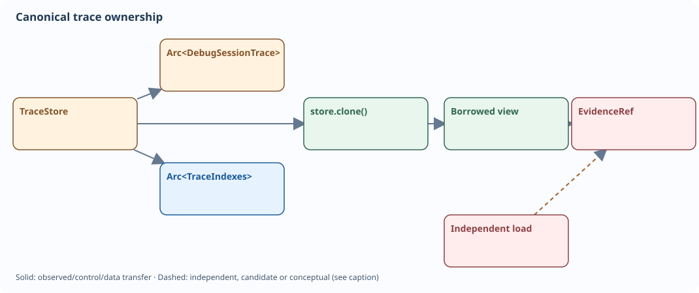

55 · Parser data structures and ownership reference #
Key terms #
| Term | Plain meaning |
|---|---|
| Vector | An ordered list; a position such as snapshots[3] identifies the fourth saved snapshot, not necessarily debugger stop ID 3. |
| Reference | A checked pointer to an existing record. An EvidenceRef is also tied to its trace owner. |
>
The big picture #
This page is a reference for the types that carry parser state. It is not a second schema manual: the authoritative wire definitions are in src/models.rs, and the parser-specific wrappers are in src/trace_parser/. The distinction between owned, shared, borrowed and indexed data is the key to reading the rest of the parser.
DebugSessionTrace and RecordingData #
DebugSessionTrace is the canonical imported/exported model (src/models.rs:501-548). Important top-level fields include execution limits/outcome, flattened RecordingData, tracing configuration, schema version, compile success/errors, optional DWARF/AST/fusion registries, snapshots, heap events/state, optional crash/Valgrind/sanitizer reports, and stage results. RecordingData (:736-755) owns disassembly, instruction events, source checkpoint positions, gaps, instruction count, coverage, storage/profiling, allocation lifetimes and optional heap history.
The parser never wraps this model in a second semantic object graph. TraceStore owns one Arc<DebugSessionTrace>; indexes store positions into these vectors. A snapshot's large byte buffers are not cloned by TP-2.
ExecutionSnapshot and VariableInfo #
ExecutionSnapshot (src/models.rs:68-122) owns the call stack, frame-zero variables, globals, caller frames, heap blocks, registers when present, and observation metadata. VariableInfo (:124-180) carries identity, scope/activation, type/declaration references, points-to target, raw bytes, memory evidence, read/bytes validity and source declaration reference. MemoryEvidence (:190-205) records requested/captured bytes, address, status and error.
These records are evidence, not C objects. A variable's identity distinguishes activations; a MemoryEvidence prefix does not establish initialization.
TraceStore #
TraceStore (src/trace_parser/mod.rs:191-214) is the public owner:
| Field | Type | Ownership |
|---|---|---|
trace | Arc<DebugSessionTrace> | Shared canonical trace |
indexes | Arc<TraceIndexes> | Shared position indexes |
source | TraceSourceMetadata | Small path/provenance metadata |
TraceStore is cheap to clone; a clone shares both Arcs. shared() returns the trace Arc (:354-357). raw() and semantic_input() borrow the store; neither copies records. A ValidatedSemanticView borrows the store and owns one ValidationReport.
TraceIndexes and friends #
TraceIndexes (src/trace_parser/indexes.rs:61-77) contains ExecutionsIndex, SourceIndex, AllocationIndex, MetadataIndex and OrderingFacts.
ExecutionsIndexowns twoVec<u32>CSR arrays (:270-274).SourceIndexowns internedArc<str>paths, key lookup, CSR arrays and invalid-reference markers (:376-397).AllocationIndexownsHashMap<u64, Vec<u32>>andHashMap<u64, u32>(:613-624).MetadataIndexowns hash maps ofArc<str>keys tou32positions (:167-175).OrderingFactsis aCopyrecord of booleans (:702-716).
All positions refer back to the canonical trace. None owns a snapshot, instruction event, heap event or metadata payload. estimated_bytes is an approximation, not RSS.
EvidenceLocation, EvidenceRef, Evidence #
EvidenceLocation is a Copy enum of canonical collection positions and nested positions (src/trace_parser/evidence.rs:21-66). EvidenceRef owns a Weak<DebugSessionTrace> plus a location (:68-75). Evidence<'a> is a borrowed enum of references to original records (:85-109).
The invariant is: a reference is meaningful only with its owner. resolve_evidence checks Weak::ptr_eq before resolving (:140-145). A reference cannot outlive the store because the result borrows 'a; a clone of the same store shares identity, while an independent load is foreign.
ValidationReport and ValidationFinding #
ValidationReport owns a vector of findings (src/trace_parser/validation.rs:187-232). ValidationFinding contains severity, code, detail, ValidationLocation and occurrence count (:158-171). ValidationLocation is a position in a canonical collection (:75-156). The report is owned by the validated view, not stored in the trace. is_structurally_sound and is_partial are separate queries.
ValidatedSemanticView and EvidenceConfidence #
ValidatedSemanticView<'a> (src/trace_parser/semantic.rs:28-34) owns a ValidationReport and borrows &'a TraceStore. EvidenceConfidence (:17-26) is a relationship qualifier: Definite, Candidate, Ambiguous, Unavailable, Contradictory.
The lifetime relationship is:
TraceStore (owns Arc trace)
^ borrowed by
ValidatedSemanticView<'a> (owns report)
^ borrowed by
VariableEvidence<'a> / HeapEvidence<'a> / CheckpointSummary<'v, 'a>A validated view cannot outlive its store. Evidence values borrow canonical records and cannot turn into owned semantic objects.
HeapEvidence and HeapProcessScope #
HeapEvidence<'a> (src/trace_parser/semantic.rs:543-560) borrows the store and exposes allocation ID, optional lifetime/block/old lifetime, history, historical memory, identity confidence and realloc confidence. Its events() method returns the TP-2 borrowed event iterator.
HeapProcessScope<'a> (src/trace_parser/views.rs:14-42) borrows the recorded observed PID list and followed inferior PID. It has Unknown, VerifiedObservedPidsOnly and Unsupported variants. It is a view, not a validator and not a descendant census.
CheckpointSummary and evidence items #
CheckpointSummary<'v, 'a> (src/trace_parser/consumer.rs:50-55) borrows a validated view and owns a CheckpointEvidence<'a> plus an EvidenceRef. CheckpointEvidence contains the canonical observation, context and confidence. The summary's methods return borrowed records or page iterators; they do not clone snapshots.
The item types (VariableEvidence, InstructionEvidence, HeapIntervalEvidence, GapEvidence, SourceLocationEvidence) carry a reference and a confidence. Their exact fields are in semantic.rs and consumer.rs; the common invariant is that a position plus an owner, not a copied payload, is the evidence identity.
Invariants to check when changing code #
- Every index position remains in bounds of its canonical collection.
EvidenceRefis created only after position validation and retains the owner.TraceStoreclones share Arc identity; independent loads do not.- Deep validation is explicit and its report is not silently cached on the trace.
- A page range is half-open, bounded and never clamped.
- A confidence describes the stated relationship, not the whole execution.
- Source/AST/Valgrind metadata never becomes a primary runtime identity without the documented evidence.
Diagram notes #
Ownership and references #


Data-structure relationships #